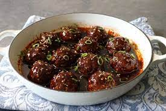

Korean Barbecue Style Meatballs
I love anything Korean-BBQ style and I really love meatballs, so I knew I was going to love these—and I did! Make sure you deactivate the enzymes of the fresh ginger by soaking it in 1 tablespoon of vinegar for 5 minutes—otherwise your meatballs will turn out soggy. Alternatively you can add the ginger to the sauce.

Ingridients
- 1 pound ground beef
- 2 teaspoons gochujang (Korean hot pepper paste)
- 1 teaspoon kosher salt
- 1 teaspoon freshly ground black pepper
- 1 tablespoon soy sauce
- 2 teaspoons grated fresh ginger (heated to 150 F degrees (65 degrees C) to deactivate enzymes, or soaked in 1 tablespoon vinegar for 5 minutes)
- 4 cloves garlic, finely minced
- ⅓ cup thinly sliced green onions, plus more for garnish
- ½ cup finely crushed buttery round crackers (such as Ritz®)
- toasted sesame seeds for garnish
- 4 cloves garlic, minced
- 2 tablespoons rice wine vinegar
- ¾ cup beef broth or water
- ⅓ cup brown sugar
- ⅓ cup soy sauce
- 1 tablespoon gochujang (Korean hot pepper paste)
- 1 teaspoon sesame oil
- 1 teaspoon Sriracha hot sauce
- 2 teaspoons cornstarch
- 1 tablespoon water
Directions
- Add ground beef to a bowl and spread gochujang evenly over the surface of the meat. Season evenly with kosher salt, pepper, and soy sauce. Spreading out the seasoning will reduce the time you need to handle the meat. Spread fresh ginger and garlic evenly over the surface. Add green onions and cracker crumbs. Mix in quickly with a fork until well combined.
- Cover and refrigerate for about 30 minutes.
- Preheat the oven to 450 degrees C (220 degrees C).
- Form mixture into 12 equal-sized balls using wet hands. Add to a cast iron skillet.
- Bake meatballs in the preheated oven until nicely browned, about 20 minutes.
- Transfer meatballs to a plate while preparing the sauce in the same skillet.
- Drain most of the grease but 1 teaspoon out of the skillet and set onto stove over medium-high heat. Add garlic and stir until fragrant, about 1 minute. Deglaze skillet with rice vinegar and soy sauce. Stir in brown sugar, beef broth, and gochujang. Season with sesame oil and Sriracha. Stir sauce and bring to a simmer. Cook until reduced by a third.
- Meanwhile stir together cornstarch and water in a small bowl to create a slurry. Reduce heat to medium-low and mix in slurry while whisking constantly. Keep simmering sauce until it has reduced to about half. Add meatballs back into the skillet and baste with the sauce. Allow to simmer, basting generously, until meatballs are heated through and are well soaked with sauce, 3 to 5 minutes.
- Serve garnished with toasted sesame seeds and green onions.